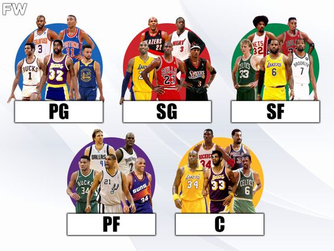
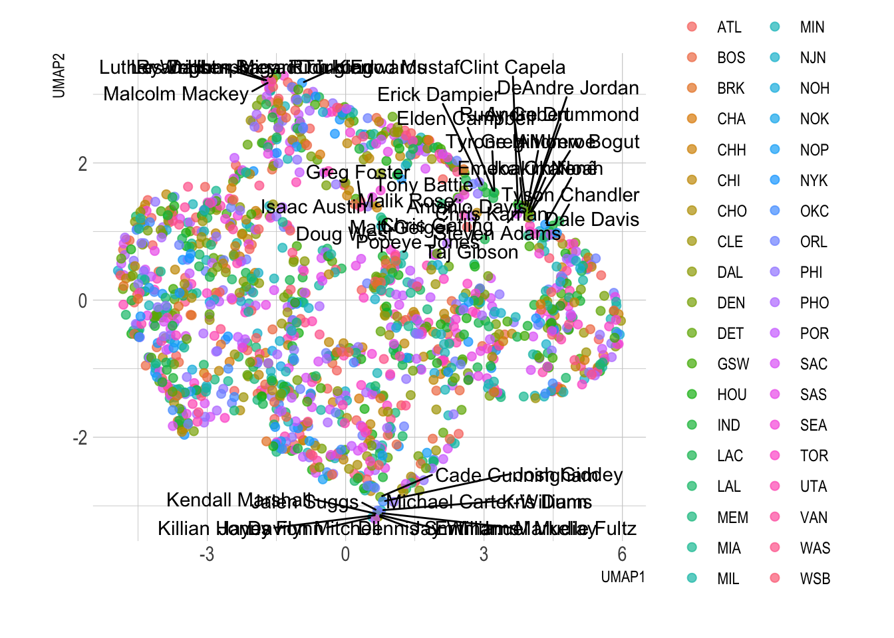
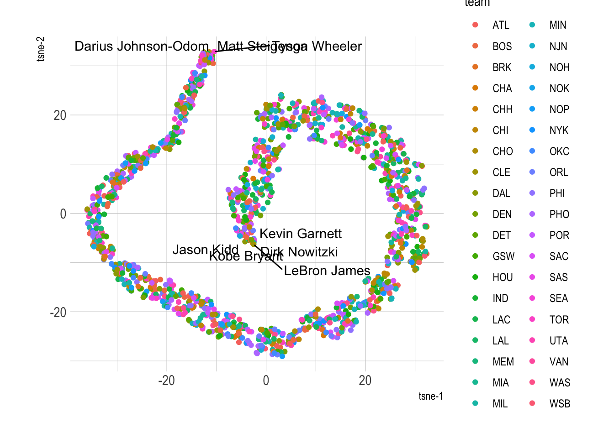

NBA draft clustering using dimensionality reduction in R
Comparing PCA vs UMAP vs TSNE to analyze NBA draft data
Long-Read
TidyModels
Dimension Reduction
PCA
UMAP
TSNE
Author
Karat Sidhu
Published
September 15, 2022
NBA Draft Analysis
main
This is a continuation of my series of learning to use different algorithms in R and learning more about the Tidymodels package, and its various uses. In addition to using the Tidymodels package, I will also try out the RTSNE package for trying out the T-SNE algorithm.
About the Data
The data set used comes for Kaggle.com, a great source of finding all kinds of data sets for data visualization and analysis. The data contains various statistics for all the NBA players drafted into the league from 1989 to 2021. It is a fairly tidy data set and requires little to none data clean in most of the cases to use for analysis.
Note
Link to the original kaggle.com source can be found here or by copy pasting the following URL:
The dataset contains all NBA Draft picks from 1989-2021. Dataset consists of year, overall pick and player data.
Notable players: LeBron James, Kobe Bryant, Derrick Rose, Dirk Nowitzki, Carmelo Anthony, Stephen Curry, Paul Pierce, Kevin Durant, Shaq, Vince Carter, Allen Iverson
Data from: https://www.basketball-reference.com/draft/

banner
Motivation
As stated earlier, my primary motivation for this blog post is learning how to use various methods of clustering data to find relationship between different players and their careers, and look at how closely those careers might be related, and potentially what influences such relations.
Each of the alogrithms/methods use work in a slightly different way, primarily unsupervised and it should hopefully show the differences in which all players are related. Furthermore, these differences will also be method dependent and hopefully interesting to a basketball or a NBA fan.
Algorithms used
Some of the methods I hope to use in this blog post include:
PCA
UMAP
T-SNE
Packages Used
For all of the aforementioned algorithms, R-code was used to carry out the analysis.
Some of the R-packages used for data analysis as well as data modelling include:
TidyModels - for PCA and UMAP
TidyVerse - for data wrangling, data tidying
RTSNE - for T-SNE
Data Analysis
Loading and Looking at the data
Data is available in a CSV format, and can be read and looked at using the readR package in R.
Loading Libraries
Adding all the libraries needed for all analysis in a single place. The main libraries used are mentioned in the previous section.
The data files were downloaded from the Kaggle repo and saved in the CSV format locally for ease of use. All original data files are also available on the Kaggle repo linked above.
nba <-read_csv("/Users/karatatiwantsinghsidhu/Documents/Code/karat_codes/posts/nba-clustering/data/nbaplayersdraft.csv")
Rows: 1922 Columns: 24
── Column specification ────────────────────────────────────────────────────────
Delimiter: ","
chr (3): team, player, college
dbl (21): id, year, rank, overall_pick, years_active, games, minutes_played,...
ℹ Use `spec()` to retrieve the full column specification for this data.
ℹ Specify the column types or set `show_col_types = FALSE` to quiet this message.
Data is in the long format, so we don’t need to transform the columns or rows and can use the given dataset as is. Furthermore, we don’t need to use the ID column in the data.
nba <- nba |>select(-c(id, college))
Remove all empty rows in the data
nba <- nba |>na.omit()
The values are now ready to be transformed using each of the three different algorithms.
Data Modelling
Set seed
set.seed(123)
PCA
Prep the recipe using the recipe package in TidyModels. Normalize all the data not used as indentifiers in the algorithm
pca_rec <-recipe(~., data = nba) |># what data to useupdate_role(player,team, new_role ="id") |>step_normalize(all_predictors()) |># normalize all other columnsstep_pca(all_predictors()) # pca for all other columns
pca_prep <-prep(pca_rec)pca_prep
Recipe
Inputs:
role #variables
id 2
predictor 20
Training data contained 1529 data points and no missing data.
Operations:
Centering and scaling for year, rank, overall_pick, years_active, games, ... [trained]
PCA extraction with year, rank, overall_pick, years_active, games, m... [trained]
Tidied the data
tidied_pca <-tidy(pca_prep, 2)tidied_pca
# A tibble: 400 × 4
terms value component id
<chr> <dbl> <chr> <chr>
1 year 0.0618 PC1 pca_EoYnc
2 rank 0.172 PC1 pca_EoYnc
3 overall_pick 0.172 PC1 pca_EoYnc
4 years_active -0.263 PC1 pca_EoYnc
5 games -0.277 PC1 pca_EoYnc
6 minutes_played -0.293 PC1 pca_EoYnc
7 points -0.291 PC1 pca_EoYnc
8 total_rebounds -0.265 PC1 pca_EoYnc
9 assists -0.250 PC1 pca_EoYnc
10 field_goal_percentage -0.125 PC1 pca_EoYnc
# … with 390 more rows
Recipe
Inputs:
role #variables
id 2
predictor 20
Training data contained 1529 data points and no missing data.
Operations:
Centering and scaling for year, rank, overall_pick, years_active, games, ... [trained]
UMAP embedding for year, rank, overall_pick, years_active, games,... [trained]
Warning: ggrepel: 1481 unlabeled data points (too many overlaps). Consider
increasing max.overlaps

TSNE
TSNE in R works slightly differently to the previous two methods. Since the package used is not TidyModels in this case, we use a slightly different approach.
First, we remove every non numeric value from the data set. These values can, however, be used once the T-SNE has been applied to the data set.
Warning: ggrepel: 1521 unlabeled data points (too many overlaps). Consider
increasing max.overlaps

Looking at the shape of the TSNE 1 vs TSNE 2, the data is close to normal distribution.
Results and Conclusion
Three different results are available for each of algorithms through which the data is run. Using a smaller data set or knowing even more information like player positions (PF, C, PG etc.) could further help with the results and establishing a pattern of why each of the players are linked together or clustered together.
Some really interesting results emerge when you look into details for each of the corresponding clusters. Look at PCA results,and you see a lot of modern great point guards like Chris Paul, Steve Nash, Jason Kidd and Stephen Curry appear very close to each other in the results. Similarly, great centers are close to each other in the same results, and similar trend is observed for a lot of other positions. However, this blog post was mainly an exercise of the process involved in getting to the results rather than what the results actually mean.
Nevertheless, it was an interesting exercise for me personally and particularly for trying out TSNE in R for the first time.